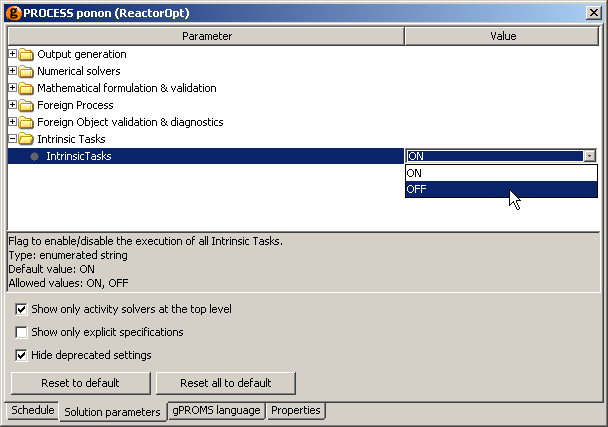

So far, the examples on Intrinsic Tasks have assumed that these Tasks should always be enabled for every instance of a Model containing Intrinsic Tasks. Although this is the default behaviour, one can easily select which Model instances should have their Intrinsic Tasks enabled. There are a number of ways to achieve this.
First, all Intrinsic Tasks can be switched off by editing the process properties. In this case, no matter what specifications are made in the Models and Process, no Intrinsic Tasks will be used and the user will have to specify the use of Tasks manually. To do this, open the Process entity and left click on the Solution Parameters tab. Double click on (or click on the "+" symbol next to) the Intrinsic Tasks folder. Now you can change the setting from ON to OFF by clicking on ON and selecting OFF from the list.

Finer control over the use of Intrinsic Tasks can be achieved by defining their use whenever a Model is instantiated. To do this, the
Intrinsic Tasks solution parameter of the Process must be ON. Then, there are three options for
instantiating a Model (A is the name of a Model defined in the gPROMS project):
UNIT A AS A A_off AS A INTRINSIC_TASKS OFF A_on AS A INTRINSIC_TASKS ON
These three specifications work as follows.
Instantiating a model with the INTRINSIC_TASKS OFF option forces gPROMS not to use any of the Intrinsic Tasks defined for that Model instance.
In contrast, instantiating a Model with the INTRINSIC_TASKS ON option turns on all Intrinsic Tasks for the Model instance.
Finally, if no specification is made (the first example above), then the behaviour of the Model instance will be the same as the Model instance within which it is contained. If it is a top-level model instance, then the default behaviour is for the Intrinsic Tasks to be enabled. So, the behaviour of a particular Model instance will be passed down the Model hierarchy until an explicit instantiation takes place, which will then override the behaviour of the parent Model.
To illustrate the behaviour of Models (and sub Models) instantiated in this way, let us assume that the three Model instances of Model
A are made in a Process. Model A then contains three instances of a Model B:
UNIT B AS B B_off AS B INTRINSIC_TASKS OFF B_on AS B INTRINSIC_TASKS ON
Finally, Model B also contains three different instances of Model C:
UNIT C AS C C_off AS C INTRINSIC_TASKS OFF C_on AS C INTRINSIC_TASKS ON
This then produces the following Model-instance hierarchy.
The ticks and crosses next to each Model instance indicate whether or not intrinsic tasks are enabled for that Model instance. Since the
default behaviour for top-level Models is for Intrinsic Tasks to be enabled, A and A_on both have their
tasks enabled. Therefore, each of the Model instances within A will have the same properties as those within
A_on. The main feature is that the *_on instances always have Intrinsic Tasks enabled,
*_off instances are always disabled and the instances with the default specification always behave as the Model instance
above.
gPROMS also allows the these specifications to be made via the graphical interface. Click on the Topology tab and then right click on the Unit you want to specify. The context menu contains an item called Intrinsic Tasks…. Moving the mouse over this item, enables a list containing the three possible settings for the Unit. Left clicking on one of these options sets the value for this Unit. Units with disabled Intrinsic Tasks are indicated by a red cog image on the Unit; those with enabled Intrinsic Tasks by a green cog; and if the default specification is made, no cog is shown. If you then switch back to the gPROMS language view, you will see that the code has changed to reflect the choice made. An example of a Unit with enabled Intrinsic Tasks is shown below.
To reiterate, control over which Model instances use Intrinsic Tasks can occur only when the Process solution parameter Intrinsic Tasks is ON; if it is OFF, then none of the Intrinsic Tasks are enabled and they must be included explicitly in the Schedule.